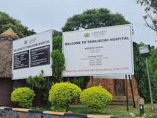

Welcome to
Tshilidzini Hospital is a government-owned public hospital in Thohoyandou, Limopopo, South Africa. We are situated on just outside of thohoyndou next to Tshisaulu.
Tshilidzini Hospital (Shayandima, Thohoyandou) is a major public referral facility for the northern Limpopo region that combines comprehensive inpatient and outpatient care — from maternity, surgery and ICU services to an active ARV/HIV clinic, TB and specialised outpatient clinics — supported by on-site pharmacy, radiology and rehab services. As a government hospital, Tshilidzini plays a critical role in delivering accessible, quality healthcare to the local population and surrounding rural communities.
With a focus on patient-centred care, Tshilidzini Hospital is staffed by dedicated medical professionals committed to improving health outcomes in the region. The hospital collaborates with local clinics, health departments and NGOs to extend its reach and impact, addressing key public health challenges such as HIV/AIDS, TB and maternal health. Through ongoing investments in infrastructure, technology and staff training, Tshilidzini Hospital strives to enhance its services and provide compassionate, effective care for all patients.

Below is a range of our medical and support services we provide.
The ICU provides continuous, high-dependency care for critically ill patients from Tshilidzini and surrounding clinics. It manages life-support, close monitoring after major surgery or severe trauma, and stabilisation before transfer to higher-level facilities when needed.
An outpatient service for diagnosis, monitoring and long-term management of diabetes. At Tshilidzini this clinic runs follow-ups, blood sugar monitoring, education on diet/insulin use, and coordinates referrals for complications (eye, foot, renal) to specialist care.
The dental department offers routine dental care, extractions, emergency oral care and community dental outreach. It supports oral health needs for the local population and refers complex maxillofacial cases to higher centres when necessary.
These are scheduled outpatient clinics for specialties such as dermatology, ENT, orthopaedics and others. At Tshilidzini specialist teams or visiting consultants run these clinics to manage conditions locally and reduce the need for patients to travel far.
Dedicated detection, treatment and follow-up for tuberculosis and other respiratory illnesses — important in Limpopo where TB burden is high. Services include sputum testing, DOTS/medication supervision, chest X-rays (with radiology) and referral for complicated pulmonary cases.
Rehabilitation supports recovery from injury, stroke, surgery and chronic conditions. Tshilidzini’s physio/OT teams provide mobility training, pain management, post-operative rehab and work to restore daily function for patients in the catchment area.
Diagnostic imaging — X-ray, ultrasound and (where available) CT — used for diagnosis, surgical planning and monitoring treatment. Radiology at Tshilidzini enables faster local diagnosis for trauma, TB, surgical and emergency cases.
Round-the-clock nursing services across wards, emergency and outpatient units ensure continuous patient monitoring, medication administration, wound care and coordination with doctors and allied health staff.
Inpatient and outpatient dispensing of essential medicines, chronic medication scripts (including ARVs and TB treatment), counselling on drug use and coordination with prescribers to ensure adherence and stock management.
Voluntary testing, counselling, initiation and long-term management of antiretroviral therapy. The HIV clinic at Tshilidzini supports linkage to care, adherence counselling, viral load monitoring and integration with TB and maternal services.
Antenatal care, skilled delivery services, labour ward management and postnatal care for mothers and newborns. Tshilidzini’s maternity unit handles routine deliveries, emergency obstetric care and referral for high-risk pregnancies.
Tshilidzini hospital one of the best hospitals around limpopo which is a regional hospital and has helped a lot of patients thought the years with various diseases and conditions. The hospital is well known for its great services and the way it handles patients with care and respect.
More About Visitation Time everyday around the clock
Mondays:
Tuesday:
Wednesday:
Thursday:
Friday:
Saturday:
Sunday: